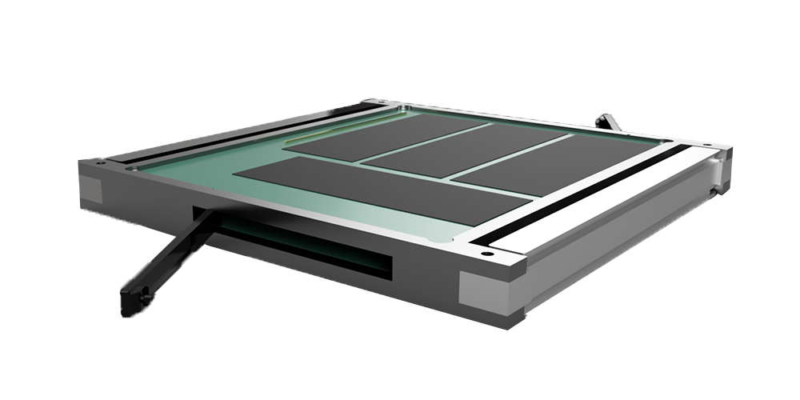

Pancakesat - as easy as an pancake
compact, light and most importantly cheap satellite equiped with the newest technology
What is PancakeSat
A new satellite form factor affordable to everyone: inexpensive and easy to use.
The main tasks of this type of satellites are testing new equipment,
studying physical phenomena and exploring space.

lightweight and affordable
Innovative and simple
Compact and rational
Our Advantages
We are making space more accessible
Low orbit
Simplicity and reliability
Modularity
Educational Edition

Ideal solution for educational institutions, amateurs and space lovers. A real satellite with a
built-in programmer and a simple interface.
More Info
Red Edition
 Ideal solution for educational institutions, amateurs and space lovers. A real satellite with a
built-in programmer and a simple interface.
More Info
Ideal solution for educational institutions, amateurs and space lovers. A real satellite with a
built-in programmer and a simple interface.
More Info
What are we doing
Our task is to create an inexpensive and accessible ecosystem in the space sector.
Carrying out a full cycle of manufacturing and launching into orbit, we control each stage.
Base satellite manufacturing
Making shields / addons
Support and problem solving
To create a satellite suitable for even novice users, we redefined the form factor of the entire
industry, especially the architecture of the device. We had to manufacture individual stabilization
and undocking systems. The satellite motherboard has a power consumption of less than 0.1W in
standard operating mode. To fit the full filling of the satellite into such a small body,
nanotechnology and unique design solutions were used in the project!